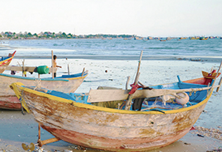
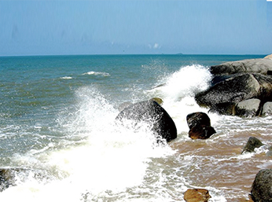

首页
遇见渔村
活动中心
个人中心
登录
|
注册
橘子小姐
退出登录
橘子小姐
经验值300/财富值100
关注
15
粉丝
32
"世界这么大，一起去看看"
我的勋章
个人设置
我的活动
我的收藏
我的点评
我的订单
我的购物车
我的画册
我的直播
我的消息
个人设置
头像：
昵称：
性别：
男
女
生日：
地址：
邮箱：
签名：
资料完整度
完成
112
4
33
[渔村]/我在这里等你，说走就走的海鲜
杭州-东沙村
2017-6-18 10:18
渔村仍旧保持着最原始的模样，朴素自然，每天清晨渔民都会回到 海边带着一晚捕获的海鲜渔村海水非常宁静..渔村海水非常宁静， 远看海上停泊的船就是玩具一般。渔村有着非常美丽的日落，傍晚 时分来到这里是不错的选择。

东沙村/6月
15图
石浦港畔/10月
15图
112
4
33
第一次来渔村呢，纪念一下
杭州-东沙村
2017-6-18 10:18
海滩上也有很多渔民在摆摊卖海鲜，海鲜都特备新鲜个头也 很大，在海里还是在岸上都停靠着许多彩色原形的渔船，里 面可以坐人，做成这样的形状也是为了方便渔民捞海鲜和放 置海鲜，海面在旭日的照射下波光粼粼，整个渔村都弥漫着 一股咸腥味，不习惯的人，在这里是呆不上半小时的。

皇城沙滩/9月
10图
112
4
33
在中国渔村,最美的莫过于皇城沙滩
杭州-皇城沙滩
2017-6-18 10:18
海水湿漉漉地飘浮在铁锈色的沙滩上，脚底的沙滩细滑油润 却坚如铁板，在这里吹吹海风，特别喜欢这里，感觉这里才 可以代表美奈这座安静的小城。据说夕阳不错，我们时间来 不及了就没往下走，只是在上面拍了拍照，
112
4
33
【渔文化】去民俗街逛逛
杭州-东沙村
2017-6-18 10:18
在渔网作坊里，工人一边织网一边教授编织技巧;海水湿漉漉地飘浮在铁锈色的沙 滩上。这里就如其名，就是个小渔村，交通很不方便。 在渔网作坊里，工人一边织网一边教授编织技巧;海水湿漉漉地飘浮在铁锈色的沙 滩上。这里就如其名，就是个小渔村，交通很不方便。 在渔网作坊里，工人一边织网一边教授编织技巧;海水湿漉漉地飘浮在铁锈色的沙 滩上。这里就如其名，就是个小渔村，交通很不方便。
东沙村/6月
15图
共
4
本画册
这是我的视频
这是我的消息